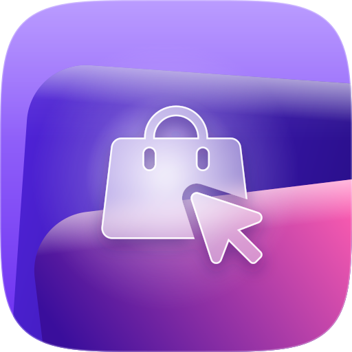
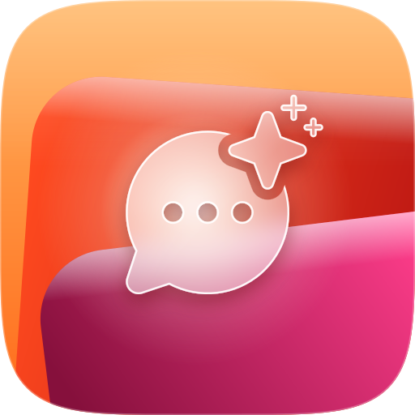

P4 · Íconos de producto
Fondo aprobado (baldosa, láminas de acrílico y resplandor), colores nuevos. Glifos de Phosphor Icons (MIT): bolsa tipo Shopify con el cursor encima, la libreta de clientes del CRM y la burbuja con el destello de la IA. Tres estilos de glifo para elegir.
Blanco · sólido, como los íconos de Apple. El más legible.
condor ecommerceTu tienda online, administrada
condor trackUn CRM a la medida de tu negocio
condor agentsAgentes de IA que atienden y venden
Vidrio · acrílico: el fondo desenfocado a través del glifo, con canto de luz.

condor ecommerceTu tienda online, administradacondor trackUn CRM a la medida de tu negocio

condor agentsAgentes de IA que atienden y vendenDuotono · contorno blanco con relleno translúcido. El más liviano.
condor ecommerceTu tienda online, administrada
condor trackUn CRM a la medida de tu negocio
condor agentsAgentes de IA que atienden y venden
Tamaños reales
Se leen hasta 20 px: a ese tamaño queda el color y la silueta del pictograma.
En contexto
Sobre tinta y en el menú de productos del sitio.
condor ecommerce
condor track
condor agents
Reglas
- Baldosa squircle continuo, la misma del ícono de app de condor.ai.
- Un color por producto: ecommerce violeta con rosa, track turquesa-océano con menta, agents naranja con magenta. Los fondos profundos son índigo, azul o carmesí: nunca café ni oliva.
- Dos láminas: la de arriba en el tono profundo del producto; la de abajo en su acento, que se oscurece hacia la esquina inferior izquierda.
- Glifo de Phosphor Icons, a ~48 % de la baldosa, sin contorno, con sombra en el tono profundo. Una insignia (cursor, destello) se recorta del glifo con un margen limpio.
- Resplandor blanco detrás del pictograma: es la luz que atraviesa el acrílico.
- Nombre en minúscula: "condor" en gris, el producto en tinta.